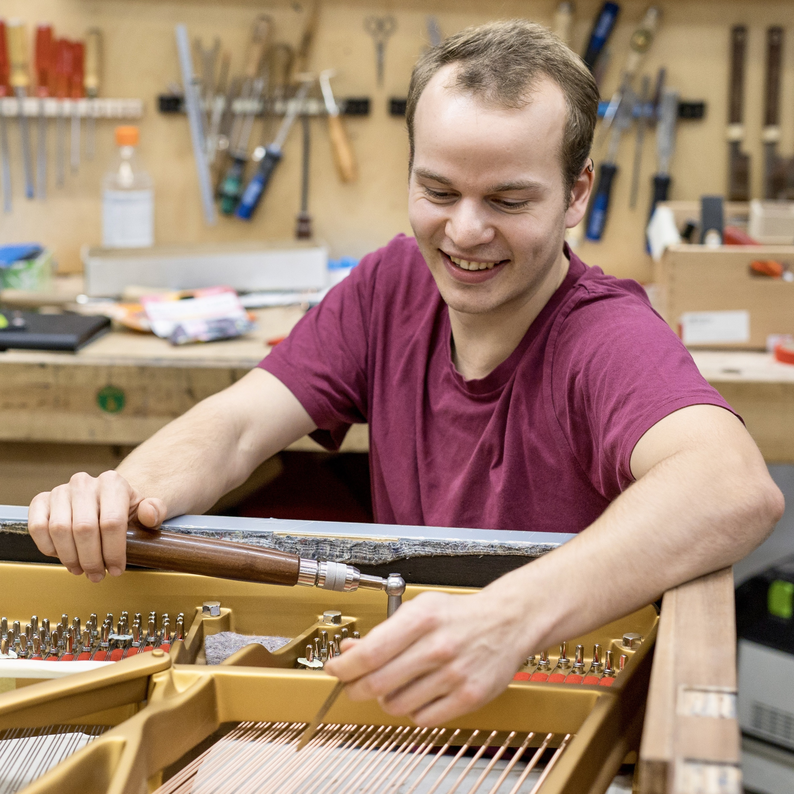

Service & Leistungen rund ums Klavier
Services
-
Stimmung & Pflege
Tuning & Care
Ein regelmäßig gestimmtes Klavier sichert nicht nur den perfekten Klang und die Spielfreude, sondern schützt das Instrument auch vor langfristigen Schäden. Da Luftfeuchtigkeit, Temperaturwechsel und Materialermüdung das Holz arbeiten lassen, empfiehlt sich 1–2 Mal pro Jahr eine Wartung (ideal nach den Jahreszeitenwechseln oder einem Transport).
Dauer: Ein Termin nimmt etwa 2 bis 3 Stunden in Anspruch.
Besonderheit: Wurde das Instrument jahrelang vernachlässigt, ist nach rund 6 Monaten oft eine zweite Stimmung nötig, um die Saitenspannung wieder dauerhaft zu stabilisieren.
Regular tuning ensures tonal purity and protects the instrument from long-term damage. Due to humidity, temperature changes, and material fatigue, maintenance is recommended 1–2 times per year (ideally after seasonal changes or transport).
Duration: An appointment takes approximately 2 to 3 hours.

-
Reparatur & Feinjustierung vor Ort
On-Site Repair & Regulation
Kleinere mechanische Probleme müssen nicht kompliziert sein. Probleme wie blockierende Tasten, klappernde Geräusche oder ein unregelmäßiger Anschlag behebe ich meist direkt bei Ihnen zu Hause mit wenigen Handgriffen. Bei jedem Stimmtermin werfe ich zudem einen Blick auf den Gesamtzustand, um potenzielle Mängel frühzeitig zu erkennen.
Minor mechanical issues do not need to be complicated. Problems such as sticking keys, clicking noises, or an uneven touch are usually resolved directly at your home. During every tuning appointment, I evaluate the overall condition to detect potential flaws early on.
-
Unabhängige Kauf- & Verkaufsberatung
Independent Consultation
Egal ob Sie ein Klavier erwerben, verkaufen möchten oder einfach Fachfragen haben: Ich stehe Ihnen mit unabhängigen Gutachten und Expertise zur Seite, damit Sie Ihre Entscheidung mit einem absolut sicheren Gefühl treffen können.
Whether you want to purchase or sell a piano, or simply have technical questions: I provide independent assessments and expertise to help you make your decision with complete confidence.